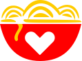
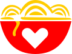

The Design Problem:
Be the first to bring a global food trend to Waikiki
I was asked to develop a responsive website for the first bubble waffle shop in Waikiki, Hawaii. It’s vital that the site appeal to the Instagram-crazy Asian tourist market, who already know what a bubble waffles are, as well as locals, who aren’t familiar with the product.
Case Background
Hong Kong-style waffles matched with locally made and inspired ice cream topped with multiple treats are the perfect snack and dessert option for Waikiki. Bubble waffles are the hottest trend in the UK and Australia, and are beginning to appear in US markets. Being the first bubble waffle shop in the are creates a unique challenge to be visible to tourists who know the product, and to educate the local market to the product.


 
